Icons in Windows apps
Icons provide a visual shorthand for an action, concept, or product. By compressing meaning into a symbolic image, icons can cross language barriers and help conserve a valuable resource: screen space. Good icons harmonize with typography and with the rest of the design language. They don't mix metaphors, and they communicate only what's needed, as speedily and simply as possible.
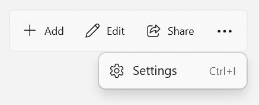
Icons can appear within apps and outside them. Inside your app, you use icons to represent an action, such as copying text or going to the settings page.
This article describes icons within your app UI. To learn about icons that represent your app in Windows (app icons), see App icons.
Know when to use icons
Icons can save space, but when should you use them?
Use an icon for actions, like cut, copy, paste, and save, or for items on a navigation menu. Use an icon if it's easy for the user to understand what the icon means and it's simple enough to be clear at small sizes.
Don't use an icon if its meaning isn't clear, or if making it clear requires a complex shape.
Use the right type of icon
There are many ways to create an icon. You can use a symbol font like the Segoe Fluent Icons font. You can create your own vector-based image. You can even use a bitmap image, although we don't recommend it. Here's a summary of the ways that you can add an icon to your app.
To add an icon in your XAML app, you use either an IconElement or an IconSource.
This table shows the different kinds of icons that are derived from IconElement and IconSource.
| IconElement | IconSource | Description |
|---|---|---|
| AnimatedIcon | AnimatedIconSource | Represents an icon that displays and controls a visual that can animate in response to user interaction and visual state changes. |
| BitmapIcon | BitmapIconSource | Represents an icon that uses a bitmap as its content. |
| FontIcon | FontIconSource | Represents an icon that uses a glyph from the specified font. |
| IconSourceElement | N/A | Represents an icon that uses an IconSource as its content. |
| ImageIcon | ImageIconSource | Represents an icon that uses an image as its content. |
| PathIcon | PathIconSource | Represents an icon that uses a vector path as its content. |
| SymbolIcon | SymbolIconSource | Represents an icon that uses a glyph from the SymbolThemeFontFamily resource as its content. |
IconElement vs. IconSource
IconElement is a FrameworkElement, so it can be added to the XAML object tree just like any other element of your app's UI. However, it can't be added to a ResourceDictionary and reused as a shared resource.
IconSource is similar to IconElement; however, because it is not a FrameworkElement, it can't be used as a standalone element in your UI, but it can be shared as a resource. IconSourceElement is a special icon element that wraps an IconSource so you can use it anywhere you need an IconElement. An example of these features is shown in the next section.
IconElement examples
You can use an IconElement-derived class as a standalone UI component.
This example shows how to set an icon glyph as the content of a Button. Set the button's FontFamily to SymbolThemeFontFamily and its content property to the Unicode value of the glyph that you want to use.
<Button FontFamily="{ThemeResource SymbolThemeFontFamily}"
Content=""/>
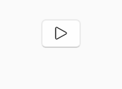
You can also explicitly add one of the icon element objects listed previously, like SymbolIcon. This gives you more types of icons to choose from. It also lets you combine icons and other types of content, such as text, if you want.
<Button>
<StackPanel>
<SymbolIcon Symbol="Play"/>
<TextBlock Text="Play" HorizontalAlignment="Center"/>
</StackPanel>
</Button>
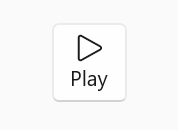
This example shows how you can define a FontIconSource in a ResourceDictionary, and then use an IconSourceElement to reuse the resource in different places of your app.
<!--App.xaml-->
<Application
...>
<Application.Resources>
<ResourceDictionary>
...
<!-- Other app resources here -->
<FontIconSource x:Key="CertIconSource" Glyph=""/>
</ResourceDictionary>
</Application.Resources>
</Application>
<StackPanel Orientation="Horizontal">
<IconSourceElement IconSource="{StaticResource CertIconSource}"/>
<TextBlock Text="Certificate is expired" Margin="4,0,0,0"/>
</StackPanel>
<Button>
<StackPanel>
<IconSourceElement IconSource="{StaticResource CertIconSource}"/>
<TextBlock Text="View certificate" HorizontalAlignment="Center"/>
</StackPanel>
</Button>
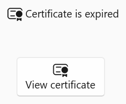
The WinUI 3 Gallery app includes interactive examples of most WinUI 3 controls, features, and functionality. Get the app from the Microsoft Store or get the source code on GitHub
Icon properties
You often place icons in your UI by assigning one to an icon property of another XAML element. Icon properties that include Source in the name take an IconSource; otherwise, the property takes an IconElement.
This list shows some common elements that have an icon property.
Tip
You can view these controls in the WinUI 3 Gallery app to see examples of how icons are used with them.
The remaining examples on this page show how to assign an icon to the icon property of a control.
FontIcon and SymbolIcon
The most common way to add icons to your app is to use the system icons provided by the icon fonts in Windows. Windows 11 introduces a new system icon font, Segoe Fluent Icons, which provides more than 1,000 icons designed for the Fluent Design language. It might not be intuitive to get an icon from a font, but Windows font display technology means these icons will look crisp and sharp on any display, at any resolution, and at any size.
Important
Default font family
Rather than specifying a FontFamily directly, FontIcon and SymbolIcon use the font family defined by the SymbolThemeFontFamily XAML theme resource. By default, this resource uses the Segoe Fluent Icon font family. If your app is run on Windows 10, version 20H2 or earlier, the Segoe Fluent Icon font family is not available and the SymbolThemeFontFamily resource falls back to the Segoe MDL2 Assets font family instead.
Symbol enumeration
Many common glyphs from the SymbolThemeFontFamily are included in the Symbol enumeration. If the glyph you need is available as a Symbol, you can use a SymbolIcon anywhere you would use a FontIcon with the default font family.
You also use Symbol names to set an icon property in XAML using attribute syntax, like this
<AppBarButton Icon="Send" Label="Send"/>
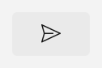
Tip
You can only use Symbol names to set an icon property using the shortened attribute syntax. All other icon types must be set using the longer property element syntax, as shown in other examples on this page.
Font icons
Only a small subset of Segoe Fluent Icon glyphs are available in the Symbol enumeration. To use any of the other available glyphs, use a FontIcon. This example shows how to create an AppBarButton with the SendFill icon.
<AppBarButton Label="Send">
<AppBarButton.Icon>
<FontIcon Glyph=""/>
</AppBarButton.Icon>
</AppBarButton>
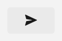
If you don't specify a FontFamily, or you specify a FontFamily that is not available on the system at runtime, the FontIcon falls back to the default font family defined by the SymbolThemeFontFamily theme resource.
You can also specify an icon using a Glyph value from any available font. This example shows how to use a Glyph from the Segoe UI Emoji font.
<AppBarToggleButton Label="FontIcon">
<AppBarToggleButton.Icon>
<FontIcon FontFamily="Segoe UI Emoji" Glyph="▶"/>
</AppBarToggleButton.Icon>
</AppBarToggleButton>
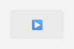
For more information and examples, see the FontIcon and SymbolIcon class documentation.
Tip
Use the Iconography page in the WinUI 3 Gallery app to view, search, and copy code for all the icons available in Segoe Fluent Icons.
AnimatedIcon
Motion is an important part of the Fluent Design language. Animated icons draw attention to specific entry points, provide feedback from state to state, and add delight to an interaction.
You can use animated icons to implement lightweight, vector-based icons with motion using Lottie animations.
For more information and examples, see Animated icons and the AnimatedIcon class documentation.
PathIcon
You can use a PathIcon to create custom icons that use vector-based shapes, so they always look sharp. However, creating a shape using a XAML Geometry is complicated because you have to individually specify each point and curve.
This example shows two different ways to define the Geometry used in a PathIcon.
<AppBarButton Label="PathIcon">
<AppBarButton.Icon>
<PathIcon Data="F1 M 16,12 20,2L 20,16 1,16"/>
</AppBarButton.Icon>
</AppBarButton>
<AppBarButton Label="Circles">
<AppBarButton.Icon>
<PathIcon>
<PathIcon.Data>
<GeometryGroup>
<EllipseGeometry RadiusX="15" RadiusY="15" Center="90,90" />
<EllipseGeometry RadiusX="50" RadiusY="50" Center="90,90" />
<EllipseGeometry RadiusX="70" RadiusY="70" Center="90,90" />
<EllipseGeometry RadiusX="100" RadiusY="100" Center="90,90" />
<EllipseGeometry RadiusX="120" RadiusY="120" Center="90,90" />
</GeometryGroup>
</PathIcon.Data>
</PathIcon>
</AppBarButton.Icon>
</AppBarButton>
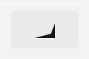 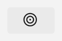
To learn more about using Geometry classes to create custom shapes, see the class documentation and Move and draw commands for geometries. Also see the WPF Geometry documentation. The WinUI Geometry class doesn't have all the same features as the WPF class, but creating shapes is the same for both.
For more information and examples, see the PathIcon class documentation.
BitmapIcon and ImageIcon
You can use a BitmapIcon or ImageIcon to create an icon from an image file (such as PNG, GIF, or JPEG), although we don't recommend it if another option is available. Bitmap images are created at a specific size, so they have to be scaled up or down depending on how large you want the icon to be and the resolution of the screen. When the image is scaled down (shrunk), it can appear blurry. When it's scaled up, it can appear blocky and pixelated.
BitmapIcon
By default, a BitmapIcon strips out all color information from the image and renders all non-transparent pixels in the Foreground color. To create a monochrome icon, use a solid image on a transparent background in PNG format. Other image formats will load apparently without error but result in a solid block of the Foreground color.
<AppBarButton Label="ImageIcon">
<AppBarButton.Icon>
<ImageIcon Source="ms-appx:///Assets/slices3.png"/>
</AppBarButton.Icon>
</AppBarButton>
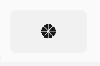
You can override the default behavior by setting the ShowAsMonochrome property to false. In this case, the BitmapIcon behaves the same as an ImageIcon for supported bitmap file types (SVG files are not supported).
<BitmapIcon UriSource="ms-appx:///Assets/slices3.jpg"
ShowAsMonochrome="False"/>
For more information and examples, see the BitmapIcon class documentation.
Tip
Usage of BitmapIcon is similar to usage of BitmapImage; see the BitmapImage class for more information that's applicable to BitmapIcon, like setting the UriSource property in code.
ImageIcon
An ImageIcon shows the image provided by one of the ImageSource-derived classes. The most common is BitmapSource, but as mentioned previously, we don't recommend bitmap images for icons due to potential scaling issues.
Scalable Vector Graphics (SVG) resources are ideal for icons, because they always look sharp at any size or resolution. You can use an SVGImageSource with an ImageIcon, which supports secure static mode from the SVG specification but does not support animations or interactions. For more information, see SVGImageSource and SVG support.
An ImageIcon ignores the Foreground property, so it always shows the image in its original color. Because Foreground color is ignored, the icon doesn't respond to visual state changes when used in a button or other similar control.
<AppBarButton Label="ImageIcon">
<AppBarButton.Icon>
<ImageIcon Source="ms-appx:///Assets/slices3.svg"/>
</AppBarButton.Icon>
</AppBarButton>
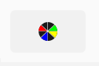
For more information and examples, see the ImageIcon class documentation.
Tip
Usage of ImageIcon is similar to the Image control; see the Image class for more information that's applicable to ImageIcon. One notable difference is that with ImageIcon, only the first frame of a multi-frame image (like an animated GIF) is used. To use animated icons, see AnimatedIcon.